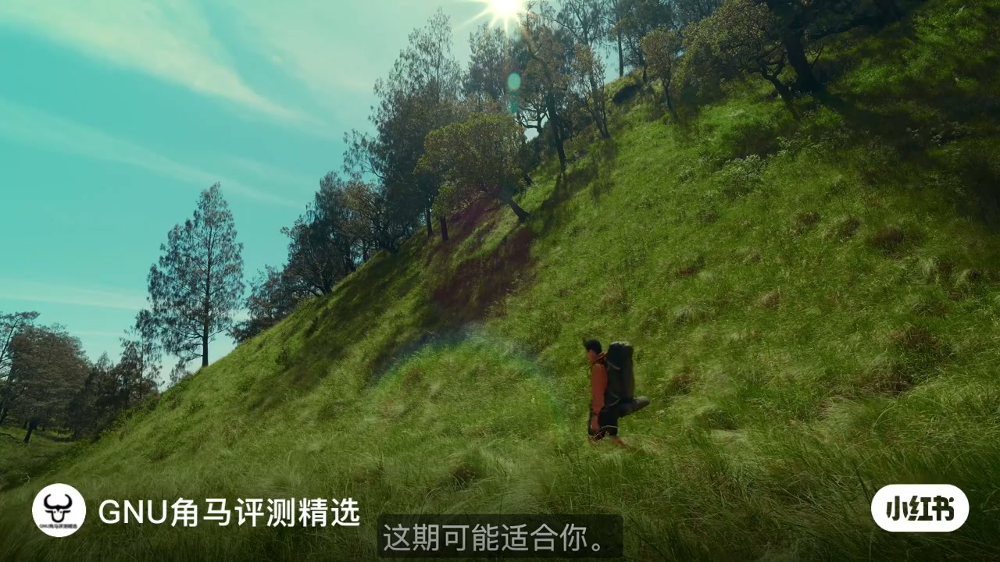
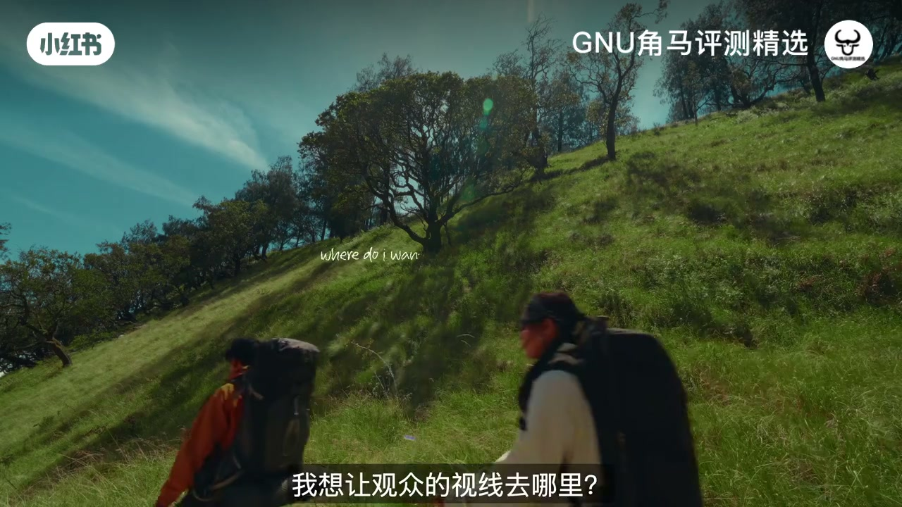
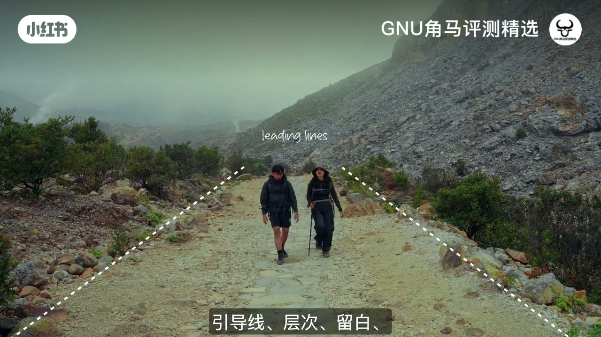
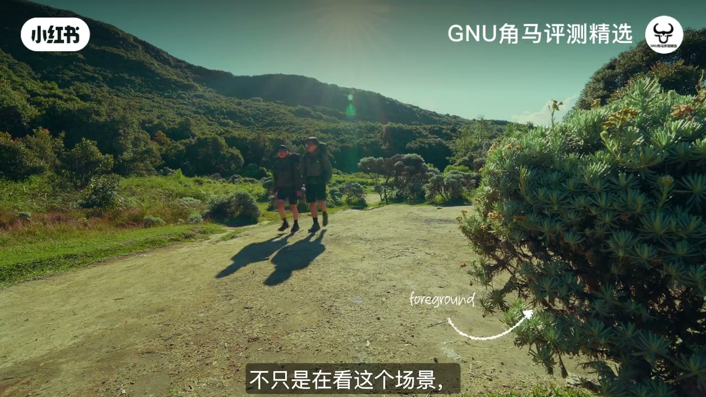
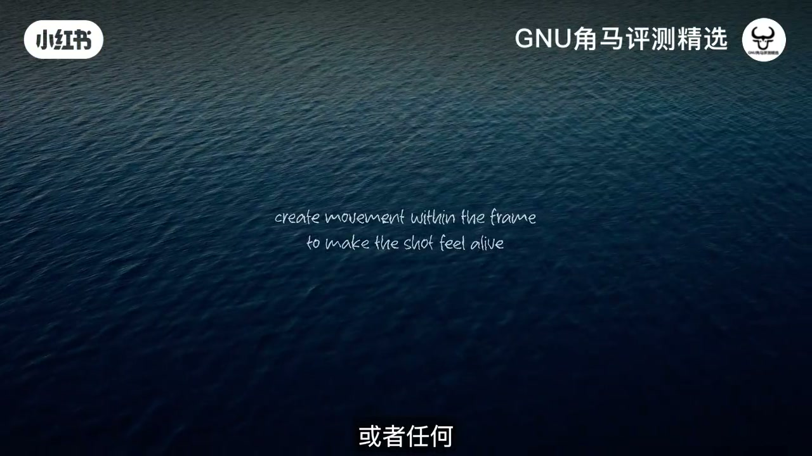
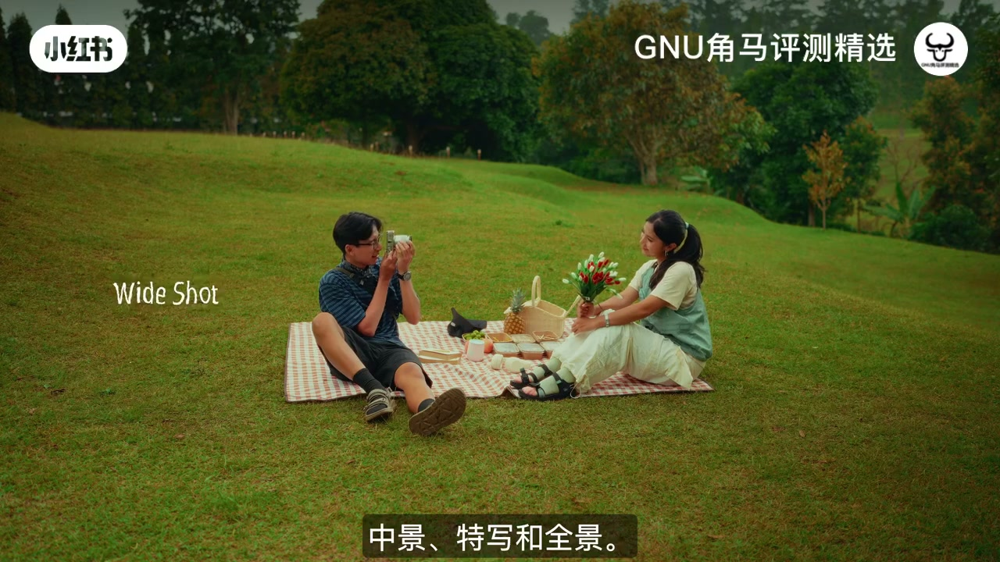
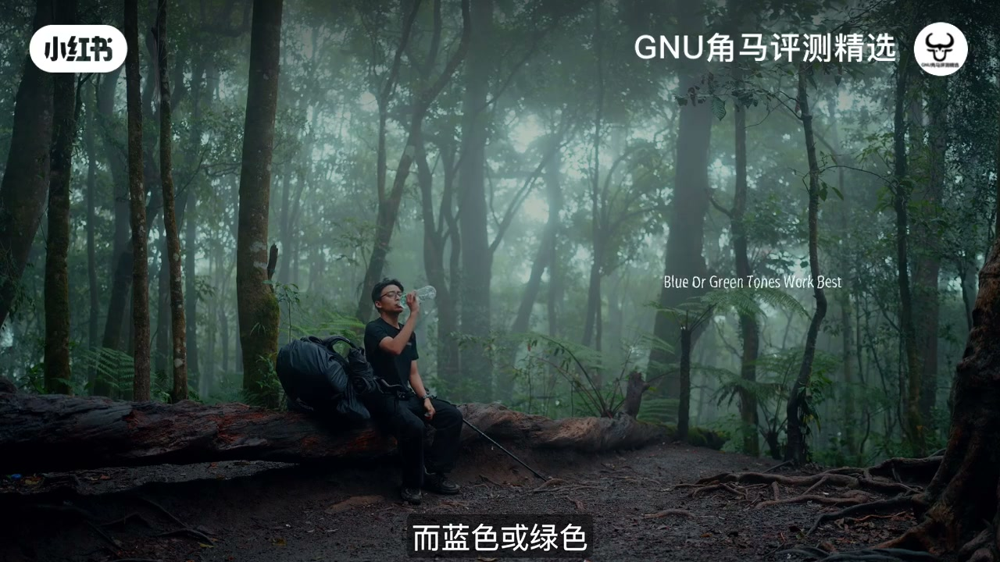

内容要点
这是一堂给独自创作者的完整固定镜头课：动机 → 视线决策 → 构图工具 → 前景/画内动 → 覆盖 → 窗光 → 调色。Whisper 常把「构图」听成「摆姿势」、「镜头覆盖」听成「拍摄背景」、「调色」听成第二次「光线」；正文按画面字幕校正。
知识结构
自己拍两原因：不骚扰、不依赖；有时最强的画面就是没有多余动作的一瞬。
画面值得看吗？主体为何在此？相机为何在此？为何留白？观众眼睛应落在哪？
相机不动时，引导线、层次、留白、形状与框中框成为画面的「动作」。
前景加人/叶/失焦物制造沉浸；主体走动等画面内运动，可不必移动镜头。
同一段动作尽量拍齐中景、特写与全景，让观众进入场景而非指望一镜说完。
室内不必买贵灯：用窗户自然光；机位略移到暗侧，脸上出现明暗对比。
调色不只为好看：暖调亲和、蓝绿调偏孤独；颜色可无台词创造情绪。
专注构图、光线、动作与小细节；练习后会越来越顺；并推广 Creator Film School。
独自拍摄不是先堆灯与 LUT，而是：锁死相机 → 用构图与前景/画内动做活 → 覆盖齐景别 → 窗光塑脸 → 调色服务情绪。
00:00-00:33为什么想自己拍
开场是登山者沿绿色陡坡上行的旅行画面。讲述者点题：如果你经常独自拍摄，这期可能适合你。两句动机很干脆——第一，不想骚扰任何人；第二，不想依赖任何人。
他把「强大」重新定义：有时候最有力的事，是画面里没有动作、没有转场，只剩一张值得看的一瞬。独自掌镜时，固定镜头往往是你我之间最现实的选择。

00:33-01:20固定镜头的四个问题
固定镜头不是偷懒，而是逼你提问。黄昏沙滩上两人相对而坐的例子配着字幕：「固定镜头逼着我去问自己。」随后一连串清单式追问：这个画面值得看吗？主体为什么在这里？摄影机为什么在这里？为什么把空间留空？最重要的是——我想让观众的视线去哪里？
他说：拍摄不总是关于「发生了什么」；有时是关于你是否知道该把相机放在哪里。知道固定镜头重要是一回事，让它们有趣是另一回事——后面开始给出方法。

01:20-01:40构图就是运动
第一点：当你的相机不动，构图就成了运动。乱石山路的双人下行镜头叠加虚线标出 leading lines，字幕同步列出「引导线、层次、留白」。旁白还提到形状、框中框一类工具——Whisper 把「构图」误成「摆姿势」、「引导线」误成「顶线」，此处以画面字幕为准。
固定机位时，你必须在别处制造「动感」；构图元素就是那套替代方案。

01:40-02:28前景与画面内运动
他最爱的加深沉浸感的办法是加前景：可以是人、叶子，甚至完全失焦的东西。土路镜头里右侧灌木被箭头标成 foreground——观众将「不只是在看这个场景」，而是感觉身在里面。
另一个简单办法：既然镜头保持不动，就让拍摄对象的动作发生在画面内。水面全画幅打出英文口诀 create movement within the frame / to make the shot feel alive。人走动或任意画内动态都行——有了画内运动，你不必依赖摇移镜头也能让固定镜头「活」。


02:28-03:03镜头覆盖
口播进入「coverage / 镜头覆盖」：同一段时间、同一个动作，尽量拍出不同景别——画面字幕明确写出「中景、特写和全景」，并在示例上叠加 Medium Shot / Wide Shot 等标签。Whisper 常写成「拍摄背景」「中间/关闭/白色」，以字幕为准。
目的不是花更多时间炫技，而是让观众真正进入场景：讲故事时，观众需要一组可拼贴的景别，而不是指望一镜扛完全部信息。

03:03-03:36窗户自然光布光
布光段落很务实：你不需要很贵的灯才能拍好看。室内拍摄时，优先用窗户自然光——很多人都已经有这盏「灯」。机位相对窗户怎么摆，差别会很大。
演示要点：人在窗前时，把相机略移到左侧或右侧，从偏暗的一侧拍，脸上就会出现光线与阴影的相互。画面还叠出 Always Shoot on the Shadow side 一类提示——暗侧起拍，塑形更清楚。
03:36-04:17调色讲故事
拍完之后，调色是让画面更有电影感的重要环节——但不必追求戏剧化的「炫技调色」。口播提醒：不要只想着把画面调好看，先想你希望场景给人什么感觉。Whisper 把本段「调色」再次听成「光线」，以语义与画面英文标注为准。
例如暖色调更适合亲和、温暖的光线感；蓝或绿色调则常适合寂寞、孤独的时刻。颜色不只是为了好看——它可以创造情绪，并且在不用一句台词的情况下讲故事。作者还提到可在简介栏找他用的预设/LUT 入口。

04:17-04:49总结与课程
收束：自己拍的基本方式不需要复杂设备或固定流程，只要专注构图、光线、动作与小细节来讲故事；练得越多越顺手。片尾推广 Creator Film School（目前只在印尼），有兴趣可走链接找课程，然后道别。
详细文字转录（132段）
Whisper medium 中文识别后经繁转简。专有术语校正见各章正文；下方保留转写原文分段。
如果你经常独自拍摄,这个可能是给你的
有两个主要原因为什么我想学习自己拍摄
第一,我不想骚扰任何人
第二,我不想依赖任何人
对我来说,有时候拍摄能做的最强大的一件事就是没有
没有动作,没有转移,只是一张画面和一瞬间值得看
在拍摄自己,拍摄画面可能是你和我之间的最佳选择
拍摄画面其实是让我问一个问题
这个画面值得看吗?
为什么我的主题在这里?
为什么我的摄影机在这里?
为什么我会把空间空空的?
最重要的是,我要我的观看者的眼睛在哪里?
这个问题完全改变了我拍摄自己的看法
当我开始思考这个问题的时候
我才发现拍摄不是总是关于发生什么事
有时候是关于发生什么事
并且知道要把相机放在哪里
当然,知道镜头拍摄是重要的就是一件事
而让它们有趣的是另一件事
所以这就是我学到的一些东西
完全改变了我拍摄镜头的方式
第一点是摆姿势
当你的相机不动
摆姿势就变成了动作
所以我开始更加注意
摆姿势例如顶线
层次
空间不正常
形状
和圆形
而我最喜欢的方法
让拍摄姿势感受到更深入
就是使用相机的前景
它可能会有些人
一些叶子
甚至是一些完全没有焦点的东西
当你的相机不动
你必须在其他方式制造深度
在前景里加上一些东西
可以让观看者感觉到
他们不只是在看着镜头
而是在里面
另一个简单的方法
让拍摄姿势更有趣
就是移动相机
而不是拍摄镜头
既然你的相机不动
拍摄镜头的动作在画面内
是让拍摄更有趣的
我还喜欢有些动作在画面内
可能是一个人在走动
或者是任何动作
重要的是
当相机不动
你朋友的相机应该会移动
这可以让拍摄姿势更有趣
不需要移动相机
接下来是拍摄背景
现在来谈谈拍摄背景
这代表你在拍摄时
有很多种类的拍摄
我不会说这很花时间
但这总是值得的
因为这会让观看者
进入拍摄的场景
而不是尝试把一种拍摄的一切都拿出来
而是想要在不同角度
拍摄同一段时间
例如每个动作
尝试把中间
关闭
和白色的拍摄
这些不同的拍摄
都叫做拍摄背景
当你正在告诉一个故事时
观看者必须有一个场景
现在来谈谈光线
关于光线
你不需要很贵的光线
来得到一个好看的拍摄
如果你在拍摄室内
就只要从窗户上使用自然光线
很简单
而且很多人都已经有了
你把你的相机摆在窗户上
也会有很大的分别
让我来示范一下
例如
如果你在窗户前面
尝试把相机移动到左边或右边
这样你会拍摄从黑暗的角度
这会让你的脸上有光线和黑暗的相互相互
现在来谈谈光线
当你拍摄完毕
光线是另一个很重要的部分
让它们看起来很像电影
但你不需要把光线看起来很戏剧化
当你在拍摄光线
不要只专注于把相机看起来好看
你想要拍摄的感觉是怎样的
例如
色彩色调很适合拍摄光线
而蓝色或绿色色调
在另一方面
通常都很适合在寂寞时刻或是孤独时刻
这是因为色彩色彩
不仅是为了让照片看起来好看
颜色可以创造情绪
并且告诉故事
不需要说任何一句
如果你想要找到同样的颜色
而不需要从一开始开始色彩色彩
你可以看看我使用的光线和光线
可以找到它们透过我的资讯栏
这就是你自己拍摄的基本方式
你不需要有固定或复杂的设计
来创造好看的照片
只要专注于你的构图
光线
动作
以及小细节
来告诉故事
你练习的越来越容易
如果你想要学习拍摄的技巧和技术
我也有一个课程叫作
Creator Film School
现在只在印尼
如果你有兴趣
可以透过连结找到课程
今天影片到此为止
下次见